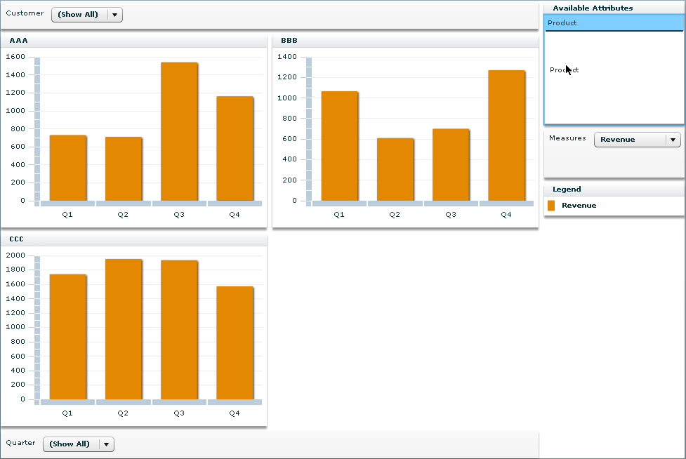

The major difference between an
OLAPChart and a
PivotChart is that the OLAP
chart is configured from the result of an OLAP query whereas the pivot
chart is configured from the OLAP cube itself. The end user will build
the query using mouse gestures in the final application from the information
introspected in the OLAP cube. This means that as for the OLAP chart,
the first thing to do to create a pivot chart is to create a cube
that fits your data. See
Creating an OLAP chart.
Once you have an OLAP cube, you bind it on the PivotChart
cube property as shown in the following code.
<mx:OLAPCube name="Sales" dataProvider="{flatData}" id=”olapcube”>
[ ... ]
</mx:OLAPCube>
<ilog:PivotChart width=”100%” height=”100%” cube=”{olapcube}” />
You do not have to create the query yourself, as the
attributes in the OLAPCube will be accessible in the application for
the end user to configure the display. See the following example.

The end user can drag the attributes from the list of
attributes to one of the areas used to configure the pivot chart:
At the bottom, the category area. All
attributes dropped in that area will be used to configure the category
axis of the PivotChart. If several
attributes are there, a cross-join will be made between them in the
order in which they appear.
At the top, the chart area. All attributes
dropped in that area will be used to configure how many charts will
be created by the PivotChart. If
several attributes are there, a cross-join will be made between them
in the order in which they appear.
On the right, the series area. All attributes
dropped in that area will be used to configure how many series will
be created per chart by the PivotChart. If several attributes are dropped, a cross-join will be made between
them in the order in which they appear.
When an attribute is dragged to an area, it displays
a dropdown list of the available choices for the given attribute.
You can choose either to show all the possibilities for an attribute
(for example “Product 1” and “Product 2” for the Product attribute) using the (Show All) option or only some of them. When an attribute is dragged to the
chart or series area, another option called (All) is available. In this case all the values of the given attribute
are aggregated and displayed as a single value.
When you drag the Measures attribute, you can choose which measures you want to be displayed
in the pivot chart. These values come from the “Measures” dimension of the OLAP cube.
Another feature available for the pivot chart but not
for the OLAP charts is navigation between pages when the number of
charts exceeds the specified limit for one page. Navigation is implemented
as arrow buttons which appear automatically above the chart area when
needed.